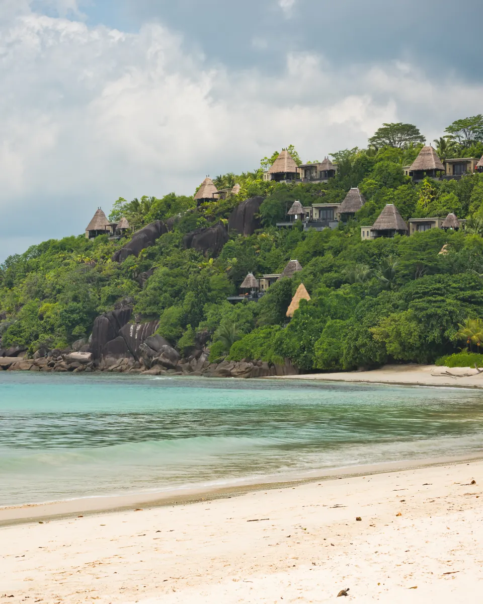
כאן נוחתיםמאהה
האי הגדול, ושם נוחתים. הכי הרבה מלונות, חופים ארוכים, הרים ירוקים, ושוק צבעוני בבירה ויקטוריה.
מתאים ל: מי שרוצה מגוון ונוחות, ולימים הראשונים או האחרונים של החופשה.
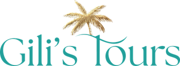
EN כתבו לנו בוואטסאפיותר ממאה איים ומאות מלונות, ואתם צריכים רק את זה שמתאים לכם. אנחנו בוחרים איתכם, סוגרים טיסה, מלון ומעברים בין האיים, ושולחים לכם הכל בכתב.
שלושה איים, חופשה אחת
רוב האנשים משלבים שניים, ולפעמים שלושה. ככה הם שונים:

כאן נוחתיםהאי הגדול, ושם נוחתים. הכי הרבה מלונות, חופים ארוכים, הרים ירוקים, ושוק צבעוני בבירה ויקטוריה.
מתאים ל: מי שרוצה מגוון ונוחות, ולימים הראשונים או האחרונים של החופשה.
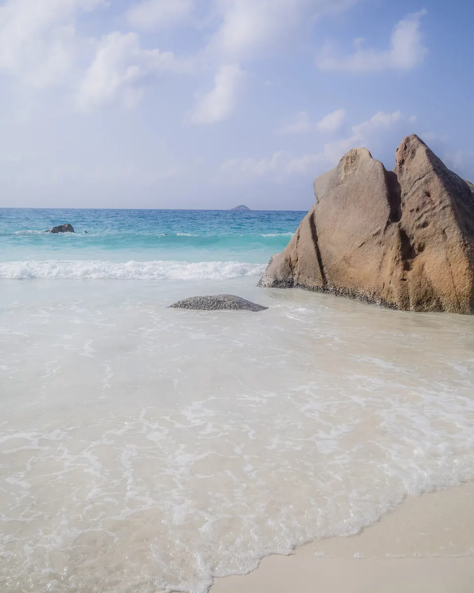
רגוע יותר, עם כמה מהחופים היפים בסיישל, ויער עתיק שבו גדל הקוקו דה מר. כרבע שעה טיסה או כשעה במעבורת ממאהה.
מתאים ל: ירח דבש, וזוגות שרוצים ריזורט שקט על החוף.
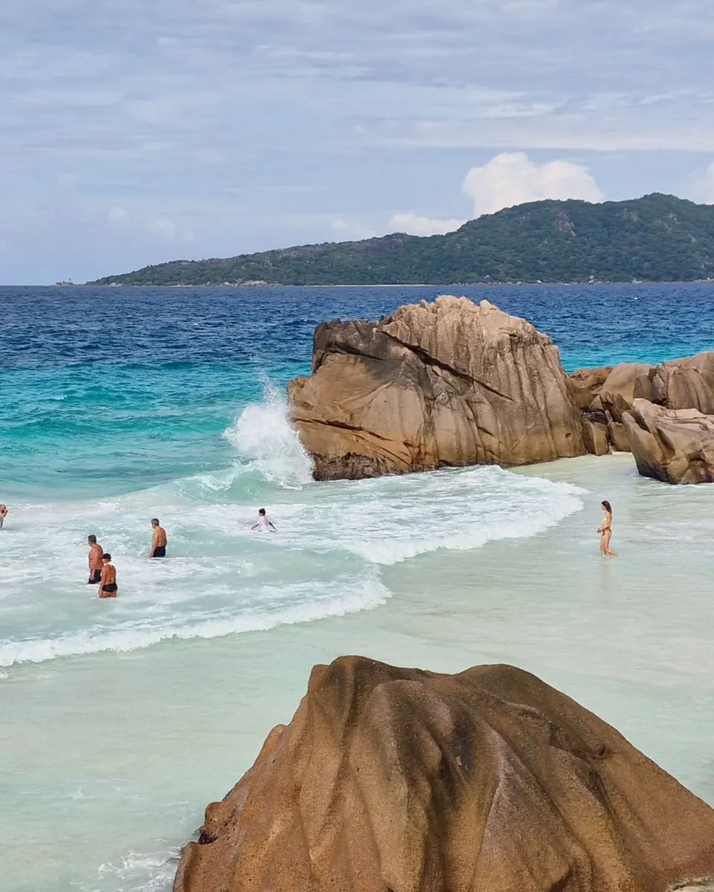
אי קטן שמסתובבים בו באופניים. צבים ענקיים, כמעט בלי מכוניות, ואנס סורס ד'ארז'ן, אחד החופים המצולמים בעולם. עשר דקות במעבורת מפראסלין.
מתאים ל: יום או יומיים של קסם, לזוגות ולמשפחות עם ילדים גדולים.
לא בטוחים? ספרו לנו מה אתם אוהבים לעשות בחופשה, ונציע לכם שילוב.
לשאול איזה אי מתאים לנוהמלונות שלנו בסיישל
לא מאה אפשרויות. חמישה מקומות שאנחנו עובדים איתם ישירות, ויודעים למי כל אחד מהם מתאים.
 תמונה להמחשה
תמונה להמחשהזוגות וירח דבש · יוקרה
אי וחוף
משפט אחד מסימונה: למה דווקא המלון הזה, ולמי הוא מתאים.
לשאול על המלון תמונה להמחשה
תמונה להמחשהזוגות וירח דבש
אי וחוף
משפט אחד מסימונה: למה דווקא המלון הזה, ולמי הוא מתאים.
לשאול על המלון תמונה להמחשה
תמונה להמחשהמשפחות
אי וחוף
משפט אחד מסימונה: למה דווקא המלון הזה, ולמי הוא מתאים.
לשאול על המלון תמונה להמחשה
תמונה להמחשהמשפחות · יוקרה
אי וחוף
משפט אחד מסימונה: למה דווקא המלון הזה, ולמי הוא מתאים.
לשאול על המלון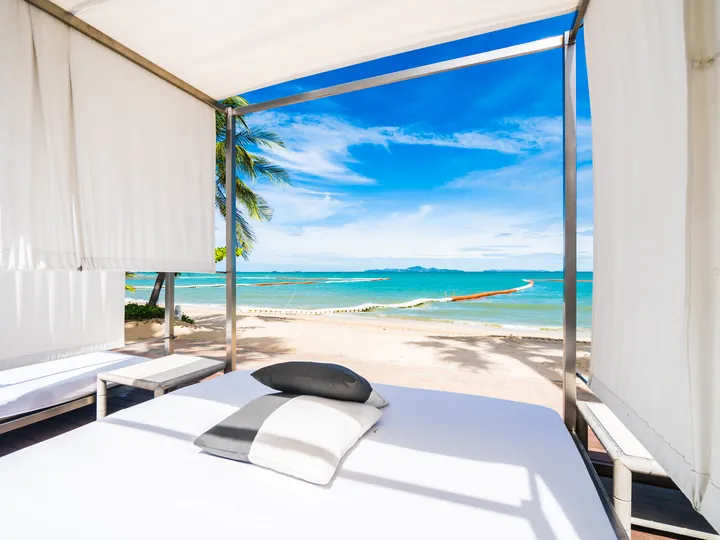
תמונה להמחשהזוגות וירח דבש
אי וחוף
משפט אחד מסימונה: למה דווקא המלון הזה, ולמי הוא מתאים.
לשאול על המלוןמחפשים מלון שלא מופיע כאן? ספרו לנו מה חשוב לכם, ונבדוק בשבילכם.
ככה זה עובד
מתי, כמה אתם, ומה חשוב לכם.
איזה אי, איזה מלון, כמה לילות בכל מקום.
טיסות, מלון, מעבורות, העברות ואטרקציות, עם מחיר מלא.
את המעברים בין האיים, הסירות והטיסות הקצרות, מסדרים אנחנו. אתם רק עולים.
מי אנחנו בסיישל
בקורפו אנחנו כבר חמש שנים. את אותו יחס, אותה זמינות ואותה תשומת לב לפרטים, אנחנו מביאים עכשיו לסיישל ולמאוריציוס. ואת הצעד הזה לא עשינו לבד: רשתות המלונות שאנחנו עובדים איתן בקורפו הן שביקשו שנצטרף אליהן גם כאן.
ומה אומרים מי שכבר טסו איתנו:
צילומי המסך האמיתיים מסימונה ואבישי ייכנסו לכרטיסים. התמונות בינתיים להמחשה
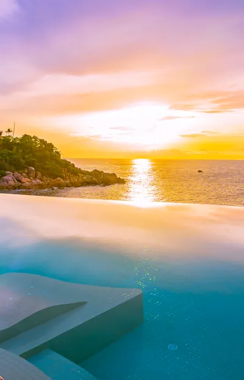
צילום מסך מוואטסאפ ייכנס כאןכאן יופיע הטקסט המלא של הביקורת, בשביל מי שמשתמש בקורא מסך.
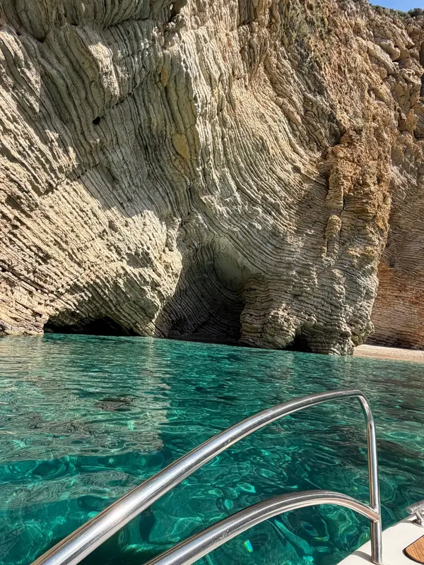
צילום מסך מוואטסאפ ייכנס כאןכאן יופיע הטקסט המלא של הביקורת, בשביל מי שמשתמש בקורא מסך.
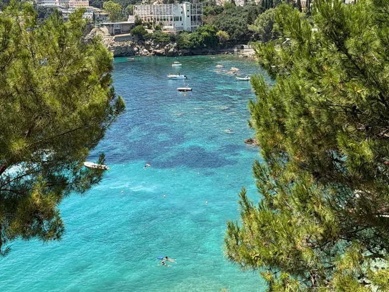
צילום מסך מפייסבוק ייכנס כאןכאן יופיע הטקסט המלא של הביקורת, בשביל מי שמשתמש בקורא מסך.
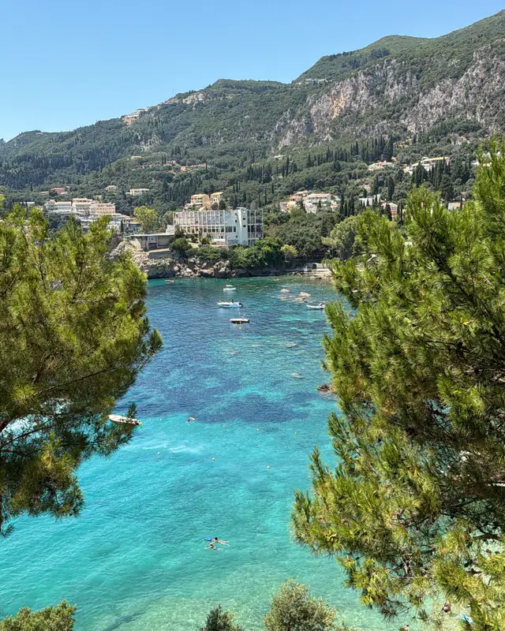
צילום מסך מאינסטגרם ייכנס כאןכאן יופיע הטקסט המלא של הביקורת, בשביל מי שמשתמש בקורא מסך.
כאן יופיע הטקסט המלא של הביקורת, בשביל מי שמשתמש בקורא מסך.
חוויות שאפשר להוסיף
כל אחת מהחוויות האלה אפשר להוסיף לחופשה. סמנו לב על מה שמעניין אתכם, ושלחו לנו הכל בהודעה אחת.
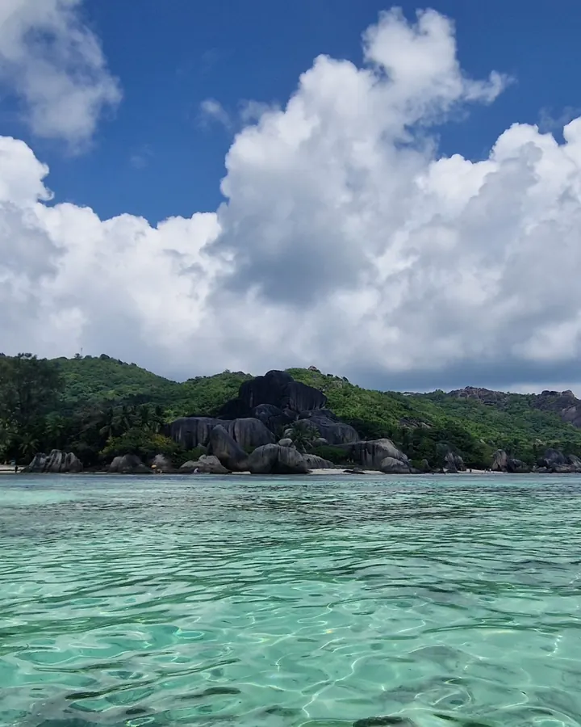
סירה בין איים קטנים, עם עצירות לשנורקל וארוחת צהריים על החוף.
לשאול על זה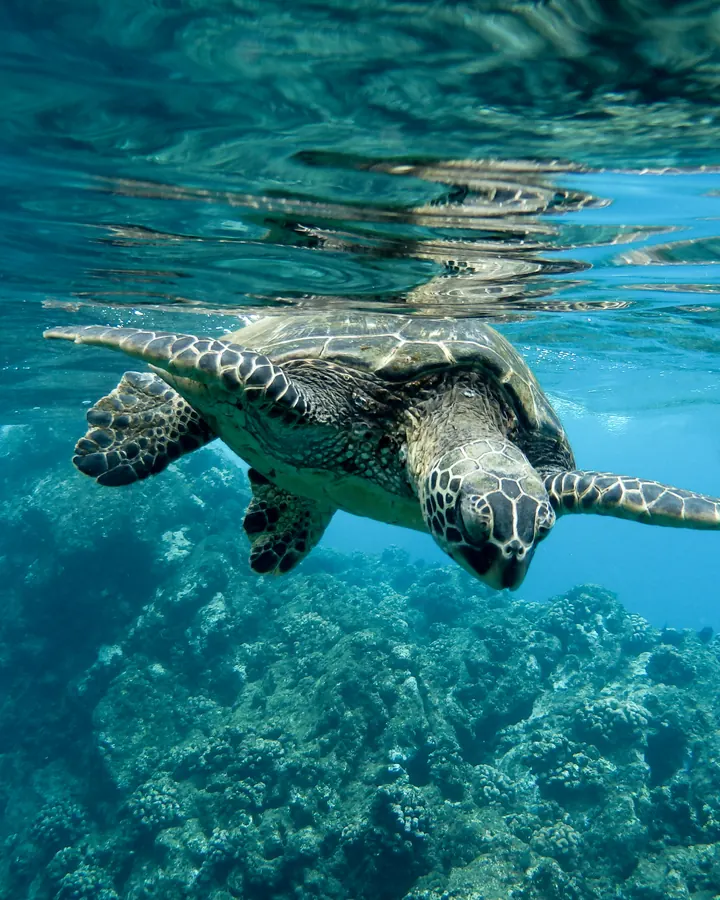
ממש מול מאהה: דגים צבעוניים, צבי ים, ומים רדודים ושקופים.
לשאול על זה
יער עתיק בפראסלין, אתר מורשת עולמית, שבו גדל הקוקו דה מר, הזרע הגדול בעולם הצומח.
לשאול על זה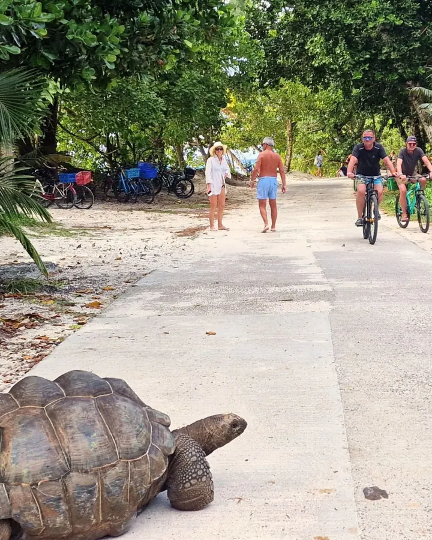
מסלול רגוע בין חופים, עם עצירה אצל הצבים הענקיים.
לשאול על זה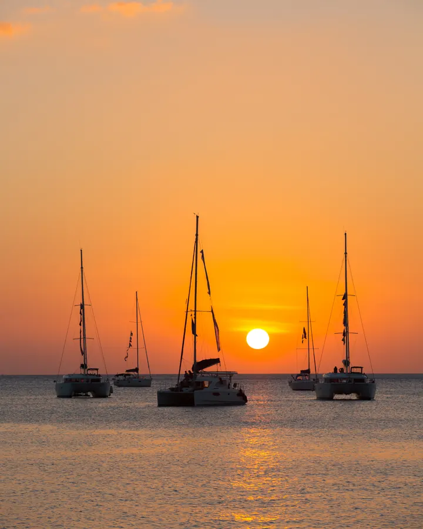
קטמרן לזוג, כוס יין, והשמש נעלמת בתוך הים.
לשאול על זה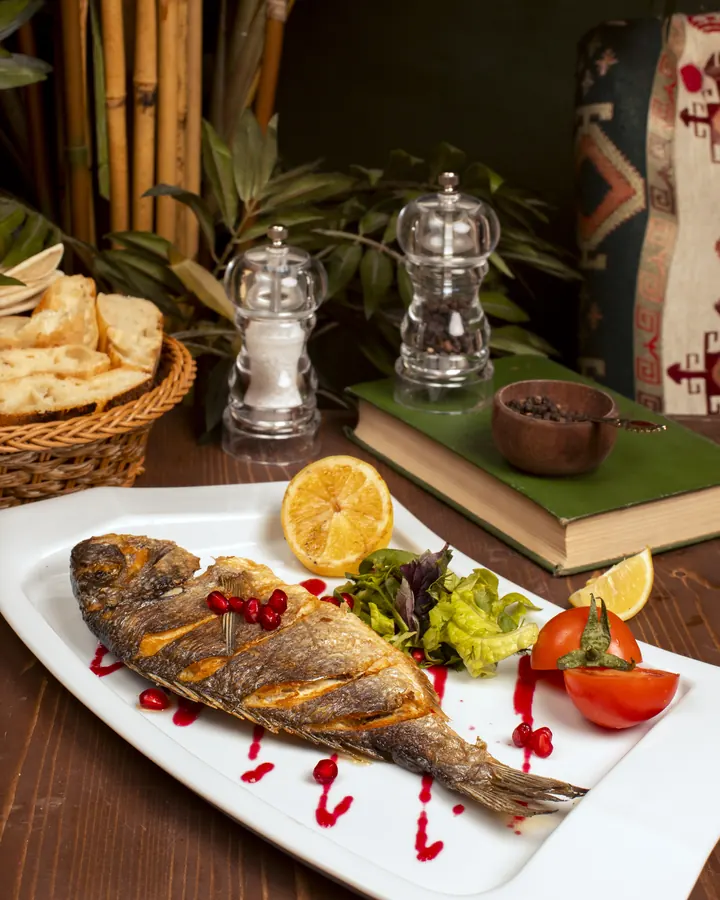
אוכל מקומי מתובל, דגים מהבוקר וקארי, אצל מי שמבשל אותו כל יום.
לשאול על זהשביל קצר יחסית ביער, ותצפית על כל החוף.
לשאול על זהלפני שטסים
ומה שלא מופיע כאן, שואלים אותנו בוואטסאפ.
סיישל חמה כל השנה, בערך 26 עד 31 מעלות. החודשים הנעימים ביותר הם אפריל עד מאי ואוקטובר עד נובמבר, כשהרוח חלשה והים הכי רגוע. בדצמבר עד מרץ יורד יותר גשם, בדרך כלל במטחים קצרים. ביוני עד ספטמבר נושבת רוח מדרום מזרח, וחלק מהחופים גליים יותר. לכל חודש יש חוף שמתאים לו, ואנחנו נדע להגיד איזה.
בטיסה ישירה מתל אביב כשש וחצי שעות, בימים שבהם הקו פועל. עם עצירה, למשל בדובאי או באדיס אבבה, בערך 10 עד 12 שעות. אנחנו נמצא לכם את האפשרות הנוחה לתאריכים שלכם.
לא. ישראלים נכנסים בלי ויזה מראש. צריך דרכון בתוקף לשישה חודשים לפחות, כרטיס חזור והזמנת מלון, ולמלא אישור כניסה מקוון לפני הטיסה. נזכיר לכם בזמן.
תלוי בעיקר במלון ובעונה, ולכן אנחנו לא מפרסמים מחיר אחד. כתבו לנו תאריכים ותקציב משוער, ותקבלו הצעה מלאה בכתב, עם כל המחירים, לפני שאתם מחליטים.
כן, ורוב האנשים עושים את זה. השילוב הנפוץ הוא מאהה ופראסלין, עם יום או יומיים בלה דיג. את המעבורות והטיסות הקצרות ביניהם מסדרים אנחנו.
כן, במיוחד ריזורטים עם חוף רגוע ומועדון ילדים. נגיד לכם בדיוק איזה מהמלונות שלנו מתאים לגיל של הילדים שלכם.
המטבע המקומי הוא רופי סיישלי. ברוב המלונות והמסעדות התיירותיות משלמים באשראי, ויורו מתקבל בהרבה מקומות.
הצעד הבא
תאריכים, כמה אתם, ומה חשוב לכם: חוף שקט, אוכל טוב, ילדים, תקציב. משם זה עלינו.